GEPA-Curator：为自我改进 Agent 策展值得学习的经验
Zack Yu、Nicholas Lee 等作者提出的 GEPA-Curator，由加州大学伯克利分校牵头，合作机构包括 ICSI、LBNL、Furiosa AI 与 KAIST。论文于 2026 年 10 月 27 日在 arXiv 首次公开，当前标注 Under Review；论文入口。本轮核验了完整原文与附录，未核验到本文独立代码或项目入口，附录列出的 GEPA、ACE 和 Meta-Harness 仓库不能视为作者已经发布的新增实现。以下数值均为论文报告，本轮没有重新运行训练或评测。
Agent 的失败既可能来自提示词的缺陷，也可能由执行框架限制、随机执行和有噪声的评判造成。若反思优化器把这些失败都当作可学习的提示词问题，就可能生成无必要甚至有害的更新；因此，需要先判断哪些任务经验值得用于反思，再决定如何修改提示词。
1. 背景和问题
反思式提示词优化的基本循环很直观：让执行模型在环境中尝试任务，收集行动轨迹和最终评分，再由一个反思模型解释失败原因，改写系统提示词，最后用新提示词重新执行。这里真正被优化的是输入给执行模型的文字规则，而不是模型参数。相较于需要大量梯度更新的强化学习，它可以直接作用于已有工具型 Agent，因此在网页操作、应用接口调用和复杂工作流中很有吸引力。不过，这条循环暗含一个很强的前提：失败轨迹中存在能通过修改提示词解决的缺陷。论文认为，在多轮交互环境里，这个前提经常不成立，而现有优化器没有充分区分失败的来源。
以购物为例，Agent 忘记选择商品必填规格便加入购物车，确实可能需要在提示词中加入检查规则；但如果按钮因环境故障而失效，继续反思同一条失败轨迹可能让优化器错误地加入绕路操作，甚至要求模型在正常购物页面上回避原本正确的动作。两种失败最终都可能得到零分，二元标签却无法提供正确归因。类似问题也发生在工具没有实现某个接口、用户请求缺少必要信息、网站初始状态污染以及判分器对成功条件理解不一致时。表面上的任务成功率混合了执行模型能力、环境可解性和评估可靠性，不能直接当成提示词质量的充分统计量。
GEPA 已经通过验证集选择提示词，并在修改后回到当前小批任务检查变化。这些机制可以拒绝一部分坏更新，但都发生在反思已经提出候选之后。若小批里有难以解决的环境故障，反思模型仍会消耗预算解释它们；如果小批评分自身不稳定，有害修改还可能侥幸通过检查。另一方面，验证集只能告诉优化器某个候选整体得分较低，不一定指出它误解了哪条任务的失败。论文因此把问题前移到经验输入端：决定让什么任务产生新的轨迹，以及给反思器什么历史上下文，而不只是设计更严格的更新后验收。
这也解释了为什么“只多跑几次”和“优先失败任务”不是等价的解决方案。反复运行一个稳定失败的任务，既可能是在攻克真正困难的行为，也可能是在重复采集网站故障；成功失败交替出现，既可能意味着模型尚未稳定掌握，也可能意味着判分标准摇摆。同样的成功率曲线可以对应完全不同的学习价值。如果只按成功次数分配采样概率，优化器很容易把噪声当成尚待攻克的困难，而把能提供迁移规则的少数失败挤出预算。本文的关键判断是：必须阅读轨迹语义，理解失败发生在什么步骤，才能决定下一次执行是否值得。
另一个常被忽略的缺口是，反思器未必知道“正确执行曾经是什么样”。只看当前失败时，模型需要凭空猜测可行路线；同一任务以前如果确实成功过，那条轨迹本可以提供更强的对照。可是成功记录也不能不加筛选地使用，宽松判分器可能把未完成任务判为成功，被污染的环境状态也可能让一次执行看似完成目标。论文把成功检索和任务选择放到同一个策展器中，就是为了共同处理正负经验的可靠性。它并没有声称成功轨迹天然可信，而是要求结合重复结果和状态证据选择参考，证据不够时允许不提供锚点。
对推荐系统工程，这个问题直接对应自动迭代实验的失败归因。一次离线指标变差，可能来自模型结构，也可能来自数据切分变化、样本不足、训练未收敛或评估代码异常。若一个自动编码 Agent 据此修改模型，可能把数据问题固化成算法规则。本文没有做推荐实验，所以不能据此宣称能提高推荐准确率；它提供的是更具体的流程启发：保存每个实验任务的完整历史、区分可优化问题与外部故障，并把同条件成功运行作为回归参照。这种迁移需要额外定义实验状态、预算和稳定性，不能照搬网页任务的成功判分。
对于大模型系统，本文研究的是外层控制策略，而非新的语言模型架构。执行模型仍是固定的 gpt-oss-120b，反思器和策展器由更强的模型承担。最终能力变化来自提示词及任务经验的重新组织，所以“自我改进”在这里有明确范围：通过外部优化过程改进 Agent 行为，不能解释成模型自主更新权重，也不是不需要监督的无限递归增长。最值得保留的研究问题是，在可执行但有噪声的环境里，一次失败究竟应当成为修改依据、延后复查对象，还是不可靠评估的线索；这个判断要在有限预算内同时提高学习收益与避免错误归因。
历史成功和当前失败能够形成强对照，还需要注意环境状态。网页任务可能依赖账户权限、商品库存或前序操作留下的状态，应用任务可能依赖不同数据库初始值。如果成功轨迹来自另一种初始条件，即便同一任务标题相同，也不代表当前提示词可以照做。论文通过任务历史和策展器文字判断处理这类不确定性，而没有建立可证明的状态等价判定。因此，它的输入依赖不只是保存自然语言轨迹，还包括保存足够的执行状态与评估证据；如果日志只剩最终一句“成功”或“失败”，方法中最有辨识力的语义依据就丢失了。
从优化目标看，策展改善的是有限调用预算内的提示词搜索，不是把所有训练任务都解决。稳定掌握任务适当降频，可以释放预算；不可解任务暂缓，也可能提高同预算下能学习的行为覆盖。但如果部署分布恰好大量包含被判定不可解的任务，测试平均分提高并不能保证这些用户获得更好的体验。研究任务选择时必须同时关注整体测试表现与被降频群体的变化，避免优化过程以忽略少数困难需求为代价提高主指标。本文的动态重访设计降低了这种风险，却没有从理论上消除选择偏差。
2. 方法
本文没有可复用的核心公式。原文核心方法第 3.1、3.2 节通过任务历史、LLM 指令和流程决策定义系统，第 5.4 节给出成本优化；附录数值课程是对照方法，噪声概率计算是分析说明，不能伪装为本文提出的损失函数。以下按原文模块顺序解释输入、输出与更新链路。
2.1 任务策展：用执行历史判断继续尝试的价值
策展器位于提示词优化器的外侧。输入包括候选任务、该任务此前的执行轨迹、评分和已有策展判断；输出是这次是否选择任务，以及可供反思使用的背景信息。任务历史不足时，优先执行以积累证据；历史充分后，可以临时跳过稳定掌握的任务、长期因框架限制而失败的任务，或评估结果互相矛盾的任务。选择标准是下一次执行能否提供有用的提示词优化信号，而不是任务简单或困难本身。因此，成功任务可能需要复查，失败任务也可能暂时不值得投入；不能把该策略简化成只学习失败样本。
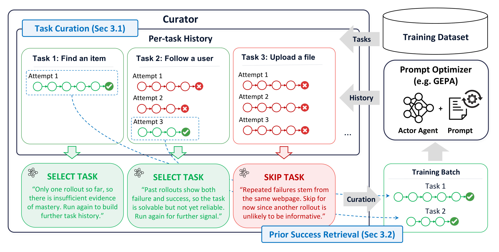
Figure 1 左侧的三个任务展示了不同历史，而非三个固定难度类别。第一个任务只有一次成功，证据不足以宣布掌握；第二个任务先失败后成功，说明至少存在可行路径，但执行仍不稳定；第三个任务反复在同一网页故障处失败，策展器判断继续尝试暂时难以带来可行动的反思信号。绿色箭头把前两个任务加入当前训练批次，红色分支跳过第三个任务。图右侧的优化器才负责调用执行 Agent、收集新轨迹并改变提示词，策展器并不直接替执行模型完成任务。历史箭头从优化器返回左侧，表示当前判断会随新证据更新，任务分类不是一次性静态标注。
图中蓝色虚线还把前两个任务中的历史成功路径带入训练批次，连接到成功检索模块。这些虚线与绿色任务选择箭头含义不同：被选择的是要重新执行的任务，历史成功则是给反思器的参考，不能把旧轨迹当成这次执行的新成功。底部的示例文字是原图内部的决策说明，表达“信息不够继续探索”“可解但不稳定继续执行”“重复网页故障暂缓”，不是论文正文混入截图。图把任务选择和成功参考放在一个策展过程内，避免额外增加一次专门的成功检索调用；但这不等于整个系统没有新增 LLM 成本，策展器本身仍要阅读历史并输出判断。
跳过是临时决定。原始版本在每个训练轮次重新考虑跳过任务，因为提示词在其他任务上的更新可能破坏已经掌握的行为，也可能让原本困难的任务变得可解。若永久删除稳定成功任务，就看不到回归；若永久删除暂时不可解任务，就不能发现此前故障已经恢复。这里的动态复查与固定清洗训练集不同，维护的是随优化过程变化的任务执行频率。执行后的新轨迹和评估都要回写同一任务历史，形成后续决策依据。策展判断依赖历史可追溯性，历史丢失或环境不可比都会削弱它的归因能力。
2.2 历史成功检索：给失败反思提供可靠对照
当当前任务失败时，策展器可从同任务历史中选择一条成功路径，交给反思器作为参考。输入不是全库任意相似任务，而是当前任务自身的成功池；这减少了任务条件不同带来的误导。反思器同时看到失败路径与可靠成功路径，能够判断失败发生在哪一步、哪些动作是必要条件，而不必仅凭零分结果猜测。策展器优先选择被多次一致评估支持的成功模式，避开状态不清楚或成功条件前后矛盾的记录。如果没有合适成功，系统明确 abstain，即不提供参考，仍可基于当前失败继续原有反思流程。
成功参考的作用发生在优化阶段，不是部署时给每个用户查询加一条固定演示。它帮助生成更好的提示词修改，最终测试执行仍使用选出的提示词。任务策展控制反思看见哪些失败，成功检索控制它用什么证据理解失败，两者作用位置互补。比如网站功能实际上可用，但判分器偶尔拒绝正常操作时，一条稳定成功的轨迹可以帮助反思器保留正确动作；反之，如果所谓成功只来自评估器宽松，贸然使用它会把错误行为强化成规范。因此，论文的方法价值不仅是“加成功示例”，还包括对成功池允许有理由地拒绝选择。
原文实现把两个判断合在一次 Curator 调用中，输出通过验证后再交给优化器。优化器主实验使用简化的 greedy GEPA：维护单一提示词演化链，不做 Pareto 候选池选择；每隔一定迭代在独立验证集评估，训练结束再选择验证分数最高的提示词用于测试。这个实现差异需要通过消融解释，不能把全部增益都直接归因于“原版 GEPA 加一个模块”。消融显示去掉 Pareto 选择与原 GEPA差异较小，但只是特定 GitLab 切分上的证据，并非对所有优化问题的等价性证明。
2.3 高效策展：跳过周期、紧凑历史与成功保留
完整历史不断增长会抬高策展器输入成本，逐轮重做相同跳过判断也会浪费调用。高效版本首先让策展器直接给出要跳过的轮数，在这段时间内不重复调用；其次只保留最近若干次执行的完整轨迹，旧历史转成包含轮次、结果和先前判断的摘要；最后额外保留一条完整的可靠成功路径，以免历史压缩后丢失反思锚点。网页任务保留最近四个执行单元，非网页任务保留一个，原因是作者认为后者环境较干净，复杂归因所需历史更少。这个设置是实验配置，不应当当成跨环境最优默认值。
高效版一旦存在保留成功路径，当前失败时就提供给反思器，策展时可以换成更好的近期成功。相较原始版每轮从全历史动态挑选，它改变了记忆与刷新策略，因此只能通过结果说明表现相近，不能断言行为完全相同。跳过周期还引入反应延迟：任务或环境在周期中发生变化时，系统可能不能立即发现。紧凑历史则可能遗漏早期故障细节，导致错误诊断延续。压缩降低输入成本，同时改变了决策可见的证据，这是后续复现应当记录的结构性折中，而不只是无损缓存技巧。
论文还把策展扩展到 Meta-Harness 的代码优化。此时输入增加候选 harness 代码与开发集分数，策展器选择父代码和训练任务并给出理由，父代码重新执行后，编码优化器据此修改。每个子代码都在同样任务和全开发集上评估，最后按开发集选择测试版本。历史成功在新父执行失败时才作参考，仍保留原轨迹与来源代码的链接。扩展说明策展可以作用于代码搜索，但它不是主实验中原封不动的同一个系统，评估预算和模型也不同，应该单独解读。
3. 实验结果
3.1 主结果：先统一执行模型、预算和百分点口径
主实验固定执行模型 gpt-oss-120b，比较 Gemini 3.1 Pro Preview 与 Claude Opus 5 两种优化器模型；同一运行内反思器和策展器使用对应优化模型。批量大小为十六，结果报告五次重复的均值和标准差。GoBrowse 的四个 WebArena 网站各自按三比一比一切分训练、验证、测试，每方法每网站使用五千条 rollout。ALFWorld 为两千条，AppWorld 为一千五百条，扁平化后的零售任务为八百条。预算按执行次数匹配，并没有保证不同方法消耗的输入输出 token 或 API 金额相同。
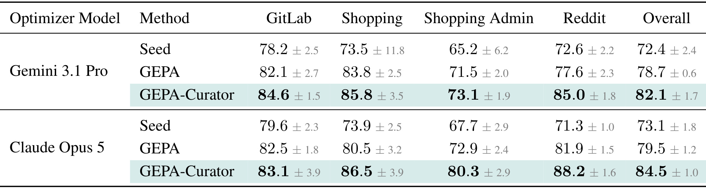
Table 1 的行先按优化器模型分组，每组再列初始提示词、GEPA 与 GEPA-Curator，列为四个网站和总体平均。Gemini 组的总体成功率从 GEPA 的百分之七十八点七提高到百分之八十二点一，差值为三点四个百分点；Claude 组从百分之七十九点五到百分之八十四点五，差值为五个百分点。两组在四个网站上的均值都高于 GEPA，不过增益分布并不一致：Gemini 的 Reddit 从七十七点六到八十五，Claude 的 Shopping Admin 从七十二点九到八十点三，均为七点四个百分点，而 Claude 的 GitLab 只有零点六个百分点。这里不能把每列最高均值直接解释成统计显著，标准差也不等于两个方法差值的置信区间。
作者进一步比较相对初始提示词的优化收益：Gemini 的 GEPA 提高六点三个百分点，Curator 提高九点七，因此收益约为一点五四倍；Claude 相应为六点四和十一点四，约一点七八倍。这是“从种子提示词出发的改进量之比”，不是最终成功率翻倍，也不是任务执行吞吐加速。各组种子分数来自重复评估，因此两种优化模型对应的初始均值略有差异，不能跨组直接把最强一行减去另一组初始值。对工程阅读而言，最可信的结论是固定执行骨干和 rollout 次数后，策展提高了这四个网站上的测试均值，而泛化到新网站、不同框架和更高成本执行模型仍需重新验证。
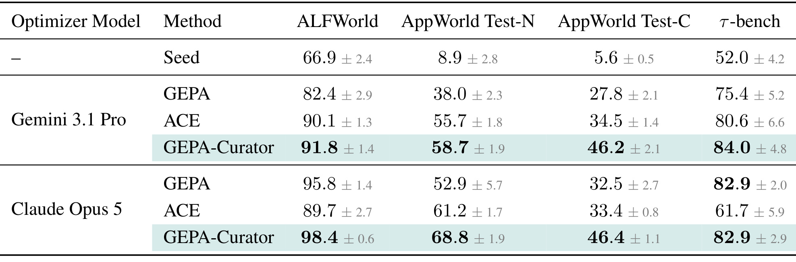
Table 2 扩展到更干净或结构化的交互任务，并加入 ACE。Gemini 组的 ALFWorld 为九十一点八，分别高于 GEPA 的八十二点四和 ACE 的九十点一；AppWorld 的普通测试与组合测试为五十八点七和四十六点二，高于 GEPA 的三十八和二十七点八。Claude 组的 AppWorld 普通测试为六十八点八，对比 GEPA 五十二点九，提升十五点九个百分点；组合测试四十六点四对三十二点五，提升十三点九个百分点。零售任务 Claude 组 Curator 和 GEPA 都是八十二点九，说明其优势并非每个设置都严格为正；这里的平局应保留，不能被“全面超越”叙述覆盖。
这张表还帮助约束摘要中的峰值说法。对 ACE 的二十一点二个百分点可由 Claude 组零售任务八十二点九减六十一点七复得，但本轮未从展示的主表复得摘要所写对 GEPA 的二十点七这一峰值，因此不把它当作已经核实的最大收益。原文多处把成功率的直接差写作百分号，本笔记统一把这种相减解释为百分点；若计算相对增幅，应另除以对应基线，不能混用。任务口径也有边界：零售任务移除了用户交互，将一百一十五个场景扁平化并切成四十八训练、三十二验证、三十五测试，结果不代表原版交互式基准。AppWorld 两个测试集来自同一次优化运行，后续平均准确率可把它们算作两个设置，但成本不能重复计费。
3.2 消融与噪声：两种策展作用是否互补
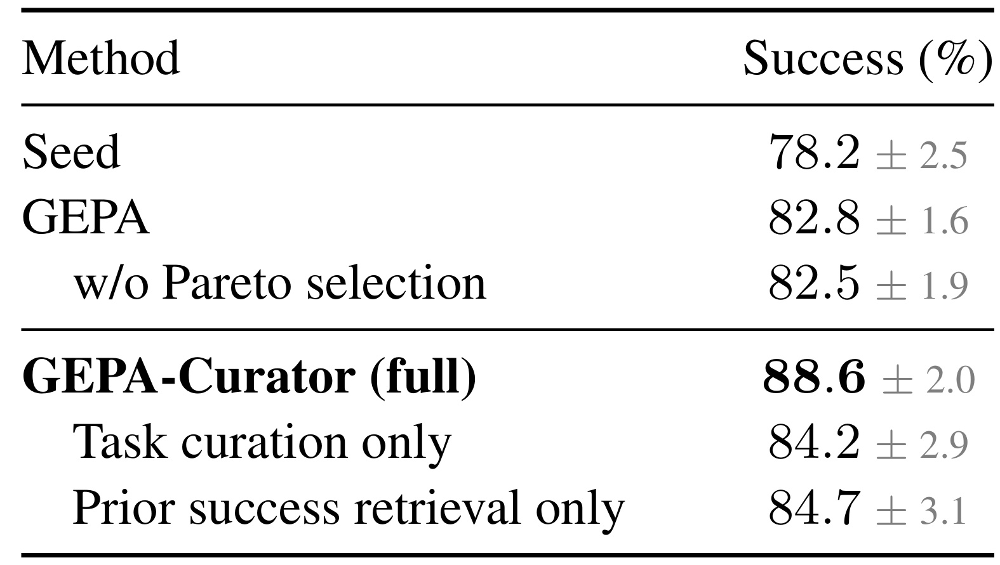
Table 3 使用另一个 GitLab 切分，五百二十个训练任务与两百个验证任务，评估的是优化后提示词在验证集上的五次表现，而不是主表测试集。原 GEPA 为八十二点八，去掉 Pareto 选择为八十二点五，差异只有零点三个百分点；完整 Curator 为八十八点六，只有任务策展为八十四点二，只有成功检索为八十四点七。两项单独都高于 GEPA，组合后进一步提高，这与“任务策展改善失败输入、成功检索改善解释上下文”的分工一致。读表时要保持基线一致：正文给任务策展单独增益一点四，是相对原 GEPA 八十二点八；若与去 Pareto 的八十二点五比较则为一点七，不能随意切换分母来放大贡献。
消融能说明两个组件在当前切分下互补，却不能证明收益严格可加。完整系统相对单组件的增益超过简单描述，并不等价于已经识别出某个独立因果交互系数；提示词搜索是随机过程，任务选择还改变了后续历史，两个分支并非固定样本上的线性叠加。另一个限制是验证集被用于最终选择，同时又是本消融报告面，所以对新任务的泛化应主要参考独立测试主表。对于复现，至少应保留相同种子提示词、执行模型、迭代预算与训练切分，再对策展选择和成功锚点分别关掉，而不能让消融顺带改变历史记录或输出验证逻辑。
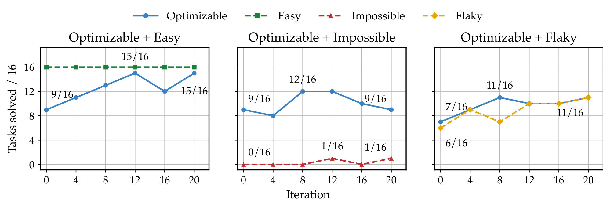
Figure 2 的横轴是优化迭代，纵轴是每组十六个任务中成功的数量；不同颜色对应可优化、简单、不可解与摇摆任务。左图把可优化任务与稳定简单任务混合，可优化组从九个成功提高到十五个，后段虽有波动但最终仍保持十五。中图混入不可解任务后，可优化组曾到十二，最终回到九，而不可解任务几乎始终为零或一个成功。右图混入摇摆任务，可优化组只从七提高到十一，噪声组也在波动。这组图的关键不是困难任务的绝对成功率，而是原本可优化任务的改进被另一类不可靠反馈拖累，表明噪声可能通过共享提示词更新污染其他任务。
图的标题使用 validation curves，但 caption 明确说在训练集每四轮评估，所以它首先是作者构造设置中的诊断实验，不能作为独立泛化曲线。三个面板也不等于真实数据集中所有噪声比例的系统扫描，每组任务只有十六个，曲线点数有限。中图从峰值回退的形状支持有害更新会积累的解释，但没有单独隔离每条提示词变化的因果贡献；仍需结合附录失败案例观察过度泛化规则。实际工程中若要复制这个诊断，应同时保留原本可优化组和噪声组的轨迹，不能只看总平均，否则简单任务的稳定高分可能掩盖真正需要改进任务的退化。
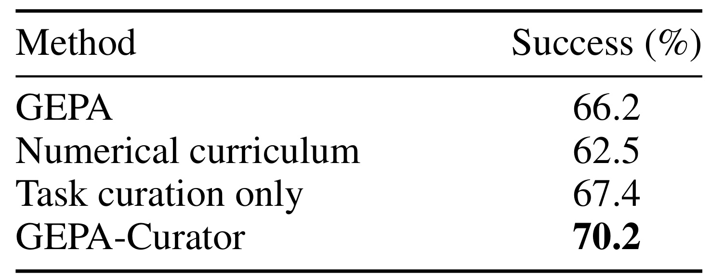
Table 4 的构造数据包含四十八个简单任务、五十四个可优化任务、四十五个不可解任务和二十一个摇摆任务。GEPA 成功率为六十六点二，数值课程为六十二点五，只做任务策展为六十七点四，完整系统为七十点二。数值课程只能读取历史成功失败序列，无法读取造成失败的语义细节；它比 GEPA 低三点七个百分点，而语义任务策展比数值课程高四点九个百分点。这个结果与论文动机一致：同样的零一历史可能由不同机制生成，调高“表现不稳定任务”的采样频率会把环境或评估噪声也吸引进来。
不过，结果不意味着所有数值课程方法都劣于 LLM 策展。被比较的是附录中一种具体数值策略，任务构造和超参数会影响它的行为；如果数值策略可以额外观测工具异常、执行时长或一致性特征，结论也可能改变。完整系统比任务策展单独再高二点八个百分点，说明在这个混合设置里，筛选任务之外，提供成功锚点仍有额外价值。这里五次评估针对的是优化后提示词，不能直接当成五个独立优化搜索实验。因而它更适合回答“轨迹语义有帮助吗”，不适合回答“LLM 策展在任意噪声率、任意预算下都最优吗”。
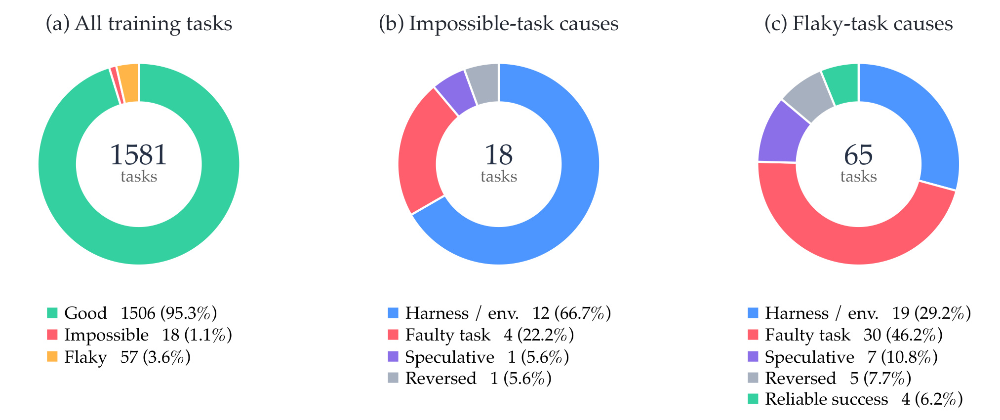
Figure 3 左图覆盖一千五百八十一个训练任务，其中十八个曾被诊断为不可解，另有五十七个只被诊断为摇摆，两类去重后共七十五个，占约百分之四点七。右图的摇摆原因分母却是六十五，因为八个任务在不同迭代中同时收到过不可解和摇摆诊断；左图把这些重叠归入不可解，右图保留所有摇摆诊断。若把左图五十七和右图六十五混用，就会误报诊断率或原因比例。不可解的十八个中，十二个主要归因为框架或环境限制，四个为任务描述问题；摇摆的六十五个中，三十个主要归因为错误或不完整描述，十九个归因为框架环境问题。
这组分析保留了策展器也会犯错的迹象：不可解诊断里有一个属于推测，另一个后来被推翻；摇摆诊断里有七个推测、五个后来推翻，还有四个是可靠成功被偶尔误判失败。因而图中的类别应理解为优化过程中作出的历史判断，不能当成人工标注的任务本体真值。作者附录进一步报告被跳过任务会重新执行，不可解任务的平均连续跳过轮数从早期五点五提高到后期八点七五，体现历史积累后执行频率降低，但并未永久删除。这一行为既支持动态策展，也提醒读者复查机制不可省略，否则早期不可靠判断可能把真正可学任务长期排除。
3.3 跨优化器扩展：代码搜索收益更温和，也存在负例
Meta-Harness 扩展使用不同模型和预算：Math-RAG 执行及判分为 gpt-oss-20B，文本分类执行为 gpt-oss-120B，编码优化器与策展器采用 Codex 配合 GPT-6-Astra。两方法共享数据切分和初始代码，Math-RAG 训练及开发调用预算一万五千，分类一万；记忆构建成本被排除。每设置每方法只做一次优化实验，再对开发集选出的代码在每个测试任务上采样三次，这与主实验五次独立重复的证据强度不同。
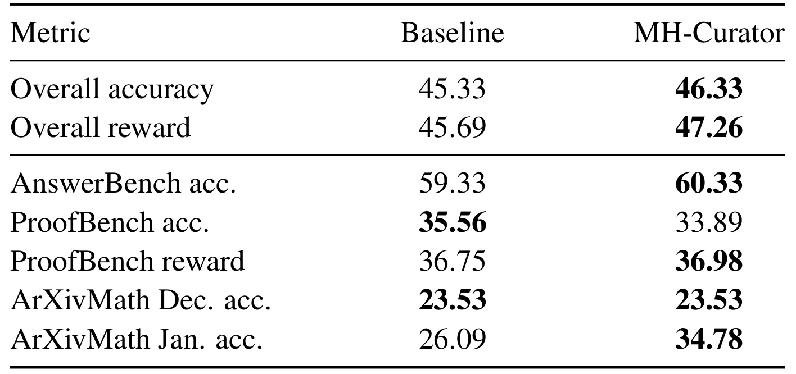
Table 5 中总体准确率从四十五点三三到四十六点三三，只有一个百分点；总体奖励从四十五点六九到四十七点二六，提高一点五七个百分点。奖励包含证明的部分得分，准确率只计完全正确，因此二者不能混作同一个指标。AnswerBench 准确率提高一个百分点，ProofBench 准确率却从三十五点五六降到三十三点八九，而证明奖励略从三十六点七五到三十六点九八。这个组合说明策展可能使部分证明更接近正确，却没有提高完全正确比例，不能用奖励的小幅上涨抹去准确率退化。ArXivMath 十二月子集持平，次年一月子集由二十六点零九到三十四点七八，收益集中在部分子集。
主文选择总体均值来概括跨代码优化的可迁移性，有一定依据，但更细的解释应是“在这个单次代码搜索设置中总体小幅提高，存在明显不均匀收益”。Math-RAG 的测试由不同数学来源组成，不同子集规模与难度不一样，不能拿一个涨幅最大的子集代表全体。执行模型还兼任数学判分器，评分可靠性本身值得额外复核；本文没有外部数学证明检查来排除这一风险。若希望在实验自动化平台迁移，应把可执行验证器与 LLM 主观判断分别记账，并保留高层平均分之外的完全正确率、部分得分和失败案例。
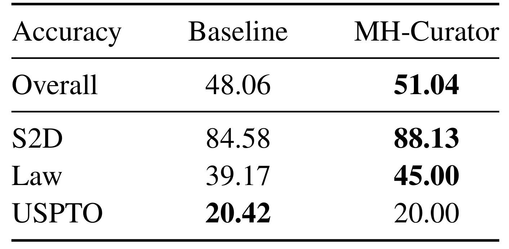
Table 6 进一步展示文本分类，Overall 是三个数据集等权平均，不是按样本数量合并的准确率。总体从四十八点零六到五十一点零四，增加二点九八个百分点；Symptom2Disease 从八十四点五八到八十八点一三，LawBench 从三十九点一七到四十五，USPTO 则从二十点四二降到二十。两个子任务提高、一个回退，共同构成平均增益，因此最稳妥的结论是策展对这组代码优化平均有帮助，不能说每种分类任务都更强。LawBench 的五点八三个百分点高于总体，说明平均收益会被各域难度和改进空间影响。
这里的“在线文本分类”是论文沿用 Meta-Harness 的任务设置名称，不是线上真实用户流量的随机对照实验，尤其不能把医学症状或法律题数据集结果外推成可直接部署的专业服务质量。分类记忆构建所用标注样本与优化任务分开，构建费用不计入搜索预算，这让两种优化器搜索对照更聚焦，但总系统成本仍不完整。由于只有一次搜索，后续三次测试采样主要反映选定代码的执行随机性，不能衡量另起一次优化过程是否会找到同样代码或出现另一种负例。复现时应把搜索随机种子和最终执行随机性分开报告。
3.4 高效版本与成本：同样多的执行，不代表同样便宜
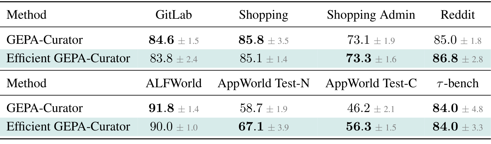
Table 7 把完整历史版与高效版本直接比较。网页四域里 GitLab 从八十四点六降到八十三点八，Shopping 从八十五点八降到八十五点一，Shopping Admin 从七十三点一到七十三点三，Reddit 从八十五到八十六点八，说明压缩历史并没有统一方向的收益。非网页任务更不均匀：ALFWorld 从九十一点八降到九十，AppWorld 普通测试从五十八点七到六十七点一，组合测试从四十六点二到五十六点三，零售任务持平八十四。可见“性能可比”描述的是总体量级和平均表现，不是每个任务无损，也不能把高效版在 AppWorld 的提高反向归给更完整的历史。
高效版同时改变跳过调度、历史表达和成功保留，表中没有逐个拆开这三项，因此无法判断 AppWorld 增益主要来自减少噪声上下文、更多样的任务安排，还是搜索随机性。网页与非网页保留完整执行次数也不同，这意味着成本优化采用了按任务族选择的配置。它展示了可行的资源折中，但还不是自动确定最优历史长度的算法。对于部署，真正需要重现的是在固定总费用下的质量曲线、历史截断后的诊断准确性和环境变化后的恢复速度；单看某个表均值接近不足以支持无限扩展任务历史。
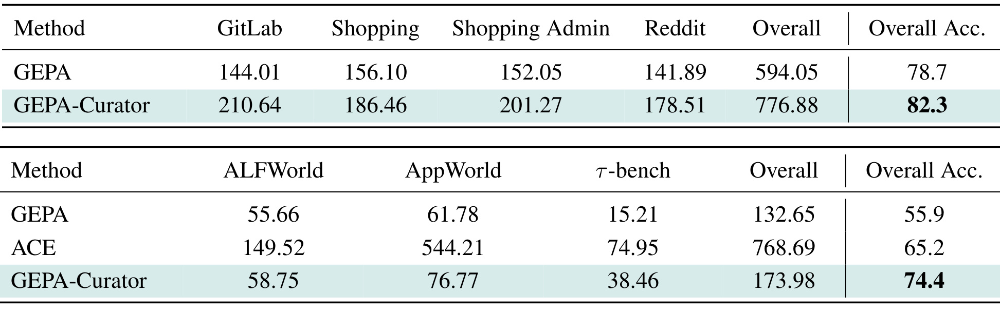
Table 8 的 GEPA-Curator 明确指高效版本。WebArena 四域总费用由 GEPA 的五百九十四点零五美元增加到七百七十六点八八美元，约为一点三一倍；对应平均准确率从七十八点七到八十二点三，提高三点六个百分点。非网页组总费用从一百三十二点六五到一百七十三点九八，也约为一点三一倍，对应四设置平均准确率从五十五点九到七十四点四。与 ACE 的七百六十八点六九美元和六十五点二相比，高效版更便宜且平均分更高；但“比 ACE 便宜”不能变成“比 GEPA 便宜”，二者比较关系不同。
费用包含一次优化的训练和验证，不含最终测试与 WebArena 托管，也不是整套研究项目实际账单。AppWorld 普通和组合测试共享优化，所以费用只算一次，但平均准确率把它们当两个评估设置。作者采用论文注明时间的模型调用价格估算，包含推理输出中的思考 token；本笔记没有把这些历史单价当作当前实时价格，也没有独立核对供应商账单。actor 较便宜而策展器较贵，决定了额外调用的相对成本。如果改用更昂贵的执行模型，成本比可能下降只是有条件推断，仍需知道任务长度、重试次数和策展输入增长，不能直接承诺迁移后的费用比例。
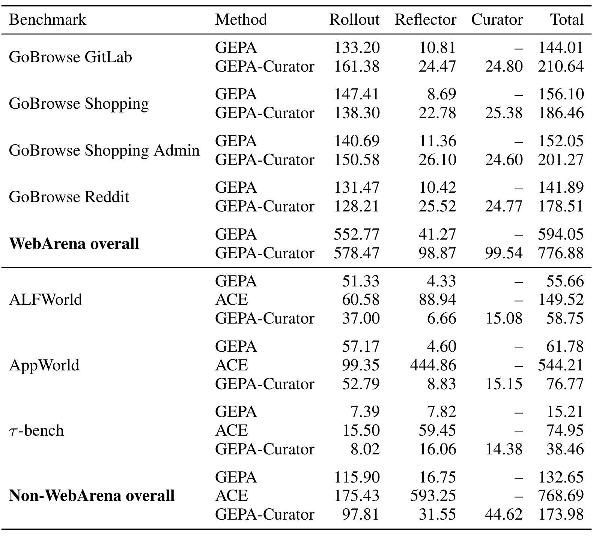
Table 15 把总费用拆成 Rollout、Reflector 和 Curator，能解释为什么“减少无用任务”并不必然减少美元开销。网页总计中，执行费用从五百五十二点七七到五百七十八点四七，反思从四十一点二七到九十八点八七，另外加入九十九点五四策展费用；整体因此增加。非网页组的执行费用反而从一百一十五点九到九十七点八一，显示任务安排或执行长度可能更省，但反思从十六点七五到三十一点五五，加上四十四点六二策展费用后，总体仍更高。这个分解比只说“策展调用开销可忽略”更接近真实系统取舍。
表中各任务的比例差异很大：ALFWorld 总费用从五十五点六六到五十八点七五，接近持平；零售任务从十五点二一到三十八点四六，超过两倍，说明总体一点三一倍不能覆盖每种部署。ACE 的 Reflector 列包含反思和 playbook 策展，不能与本文只代表反思器的同名列简单按功能一一对应；网页 judge 调用则计入 Rollout。费用在四舍五入之前求和，展示列相加可能有微小尾差。对实验平台最有用的是照着这种组件划分记账：保留执行、评估、反思与调度的独立 token 用量和次数，再比较总费用下的最终质量，而不是仅统计模型动作条数。
3.5 干净 QA 与成功锚点：收益并非普遍放大
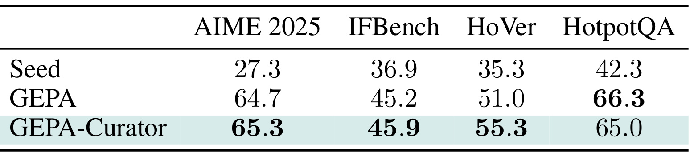
Table 16 使用 Qwen3-8B 作为执行模型、Gemini 作为反思器，在 GEPA 原有 QA 程序、切分与指标调用预算下比较。这里答案结构较简单，只做任务策展，不提供历史成功参考，每任务只保留最近十条历史。AIME 从六十四点七到六十五点三，IFBench 从四十五点二到四十五点九，HoVer 从五十一到五十五点三，HotpotQA 则从六十六点三降到六十五。四任务展示分数的等权平均约从五十六点八到五十七点九，只有一点一个百分点；以相对初始提示词的改进量衡量也只有约一点零五倍，而非网页上的一点五四或一点七八倍。
这组附录实验对判断适用边界很关键：当评估已经有干净参考答案、失败更容易归因时，额外语义策展的空间缩小，甚至会在某个任务上有负效应。它不推翻网页主表，但说明本文价值依赖经验噪声和反思归因难度，不是任何优化任务加一层 LLM 都受益。由于 QA 扩展没有历史成功检索，不能把与网页的收益差全部归因为数据更干净，也存在组件差异；严格比较应在同一任务上分别开关组件。工程选型上，先测量失败来源和评估稳定性，再决定是否需要昂贵的策展，通常比把整套框架无条件加到每个离线任务更有依据。
成功参考的附录分析也显示，早期失败反思只有百分之六点九配上历史成功，到中后期才约达一半；这符合成功池需要逐步积累的机制。五百五十四个已有成功池且当前失败进入反思的任务中，可靠成功与噪声成功并存时作出有意义选择的任务为十七个，有理由拒绝不可靠成功的为五十个，去重合计六十四个。这个口径不是所有训练任务，也不是所有执行步。它支持“成功检索不仅是随便取一个成功”的解释，但仍没有独立证明每次拒绝都正确，尤其不能把策展器的文字理由直接当成可靠性标注。
4. 总结
4.1 研究判断与可迁移环节
本文最有价值的贡献是把反思优化的输入质量显式化：失败不是天然训练信号，成功也不是天然正确示范。任务历史驱动的临时选择，与可靠成功锚点共同约束反思器，能在网页和应用任务上改善同 rollout 预算下的提示词搜索。它提供的是经验管理和失败归因方法，不是新的参数学习目标。主结果跨两种优化模型仍保持平均优势，使结论比单个漂亮案例更强；附录保留的 QA 回退、代码搜索子任务退化和实际费用上升，又为适用范围提供了必要限制。
迁移到推荐实验 Agent 时，可以先把一次完整训练评估视作任务执行，记录数据版本、资源异常、收敛状态、指标和代码变更；同任务成功参考必须共享可比较的数据口径，不能把旧切分的高分当成新实验的可靠锚点。策展器应帮助区分“值得改模型的失败”和“先修数据或运行环境的问题”，但论文没有验证这类新定义。迁移到 RAG 或工具调用系统，则可直接比较是否减少了因判分摇摆而产生的过度规则，同时监控被跳过任务何时重新出现，避免任务分布随策展变窄。
4.2 局限与后续验证
需要保留至少五个限制。第一，策展器本身由 LLM 判断，其不可解和摇摆诊断存在推测及后续推翻，缺乏完整的独立可靠性标注。第二，单独任务的历史复查未必足以发现环境整体变化，跳过周期会延迟适应。第三，主实验更新提示词，执行模型固定，不能外推到参数强化学习或完全自主算法发现。第四，费用对比使用高效变体和特定 API 历史单价，未含托管及最终测试，不能当作端到端生产节省。第五，Meta-Harness 只有单次搜索，QA 还删去成功参考，跨场景一致性需要更充分重复。摘要的二十点七峰值也未由本轮展示主表复得，应继续标为待澄清，而非用于宣传。
后续首先应复现原 GEPA、greedy 版本、任务策展、成功检索和完整版本的固定费用比较，保存每次提示词更新对应的原始证据，检验增益是否主要来自更多昂贵反思。其次，应人为注入可控比例的工具故障、任务歧义和 judge 噪声，测量诊断准确性及恢复速度，区分正确跳过与误删困难任务。再次，可以在共享数据版本的推荐实验平台做小规模验证，比较策展是否减少无效实验、是否让算法探索比例下降，以及低频任务是否被长期忽视。最后应等待本文独立实现，核对提示词、历史压缩和输出验证细节；在代码尚未核验时，本笔记应作为方法与证据记录，而非可直接复现成功的承诺。
成功锚点还应做来源污染检查。其价值来自为失败提供可信参照，而不是增加提示词长度；如果锚点依赖旧版本工具、包含不再允许的动作，或来自错误判分，那么跨轮复用反而扩大错误影响。比较原始全历史版和高效保留版时，需要记录每条锚点何时选中、为什么替换、被多少次反思引用，并跟踪它关联的规则在独立测试上的表现。如此才能把“有历史记忆”进一步细化为“历史证据是否改善更新”，而不是仅凭最终均值归功于额外上下文。与本文的核心判断一致，后续最需要完善的不是更多失败日志，而是证据来源、可靠性与更新后果之间可审查的联系。